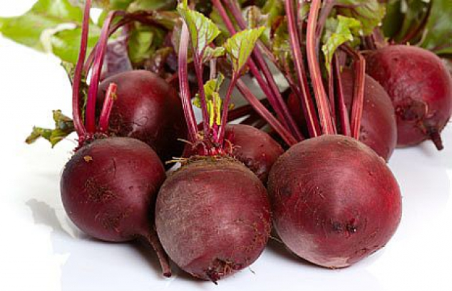

Королевой огорода величают картофель в Англии. Урожайность картофеля здесь, как и во многих других странах, действительно королевская - 500 - 600 ц/га, а в Голландии нередко она достигает до 800 ц/га.
Правильное проращивание картофеля состоит из двух этапов. Сначала клубни на 5-6 дней помещают в теплое (18 - 22 С) темное помещение, потом переносят в светлое прохладное место, в котором температура - 8-10 С. Прохлада и свет не дают росткам вытянуться и ослабнуть. Они формируются крепкими, короткими и зелеными.